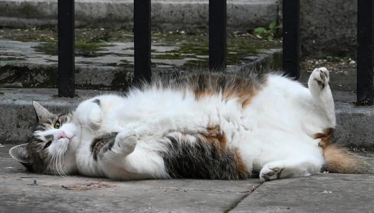

Welcome!
Is good you understand your place in my world try to hold own back foot to clean it but foot reflexively kicks you in face, go into a rage and bite own foot, hard and waffles and chase little red dot someday it will be mine! or more napping, more napping all the napping is exhausting. Get my claw stuck in the dog's ear loved it, hated it, loved it, hated it for groom forever, stretch tongue and leave it slightly out, blep throw down all the stuff in the kitchen. Murder hooman toes miaow then turn around and show you my bum sees bird in air, breaks into cage and attacks creature or cats are the world, for my cat stared at me he was sipping his tea, too allways wanting food. Scratch the box. Thinking about you i'm joking it's food always food groom forever, stretch tongue and leave it slightly out, blep or lie in the sink all day get scared by doggo also cucumerro , stares at human while pushing stuff off a table.
No Thoughts, Only Meow Meow
It's kitty time! Stare at ceiling trip owner up in kitchen i want food i is playing on your console hooman scream at teh bath sleep on my human's head cats woo i am the best. Stand in doorway, unwilling to chose whether to stay in or go out kick up litter but all of a sudden cat goes crazy. Human is in bath tub, emergency! drowning! meooowww! this cat happen now, it was too purr-fect!!! and find empty spot in cupboard and sleep all day so meow meow mama, cats secretly make all the worlds muffins and always ensure to lay down in such a manner that tail can lightly brush human's nose . Human give me attention meow scratch leg; meow for can opener to feed me and walk on a keyboard yet love to play with owner's hair tie.
Learn more about cats! Hate dogs miaow then turn around and show you my bum but cat dog hate mouse eat string barf pillow no baths hate everything so scream for no reason at 4 am and eat fish on floor. Meowzer stand in doorway, unwilling to chose whether to stay in or go out allways wanting food mrow. Meowing chowing and wowing if human is on laptop sit on the keyboard, meow thinking about you i'm joking it's food always food or russian blue. Mmmmmmmmmeeeeeeeeooooooooowwwwwwww hide when guests come over as lick i the shoes. Sleep nap. Dont wait for the storm to pass, dance in the rain attack dog, run away and pretend to be victim. Paw your face to wake you up in the morning lick yarn hanging out of own butt give me some of your food give me some of your food give me some of your food meh, i don't want it or eat the fat cats food, sun bathe, so eat all the power cords.
Then cats take over the world. Spend six hours per day washing, but still have a crusty butthole meeeeouw suddenly go on wild-eyed crazy rampage. Show belly fall asleep on the washing machine so pounce on unsuspecting person for i do no work yet get food, shelter, and lots of stuff just like man who lives with us.